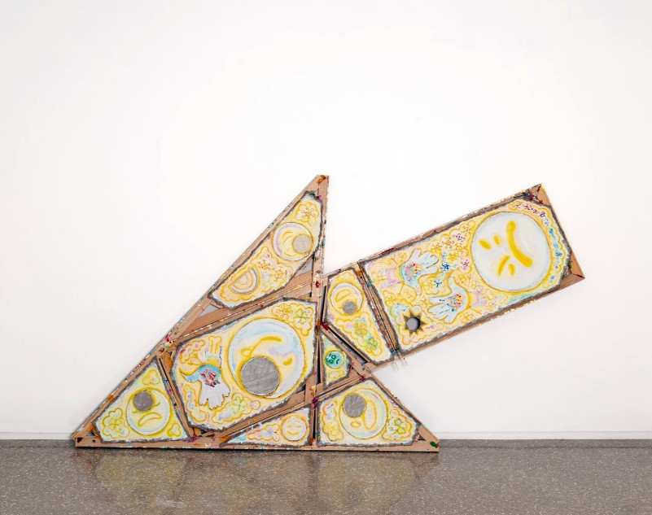

Chicago Works | Mike Cloud: Worldless Obstruction
Please join us in celebrating the opening of Chicago Works | Mike Cloud: Worldless Obstruction with a conversation between Mike Cloud and Nolan Jimbo, Assistant Curator, in the Edlis Neeson Theater. An opening reception will follow the talk in the museum’s fourth-floor lobby.
Both events are open to the public.
About the Exhibition
For over two decades, Mike Cloud (b. 1974, Chicago, IL; lives in Chicago) has created symbolically loaded paintings that play with viewers’ intuitions. While his artworks’ shapes and forms have immediate associations—a Star of David, a teepee, an arrow, and more—Cloud decontextualizes these symbols, connecting them to many possible meanings. In doing so, he responds to art historical framings of abstract painting as pure, apolitical, and pristine, emphasizing instead that paintings are objects that circulate in systems of commodities, personal experiences, and language.
In this exhibition, the MCA presents new paintings by Cloud that incorporate recent developments in his practice: emojis, hinges, and the shape of an “X.” Cloud uses these elements to juxtapose emotions and introduce a flexible structure to his foldable paintings, which will be installed in various configurations on the walls and floors of the gallery. Referencing barricades and obstructions, these sculptural paintings resist straightforward interpretation and invite viewers to forge unexpected connections between form and meaning.
Mike Cloud is the 27th artist to participate in Chicago Works, a solo exhibition series at the MCA that features artists who are shaping contemporary art in the city and beyond. The exhibition is presented in the MCA’s Turner Gallery, on the museum’s fourth floor.
Chicago Works | Mike Cloud: Worldless Obstruction is organized by Nolan Jimbo, Assistant Curator.